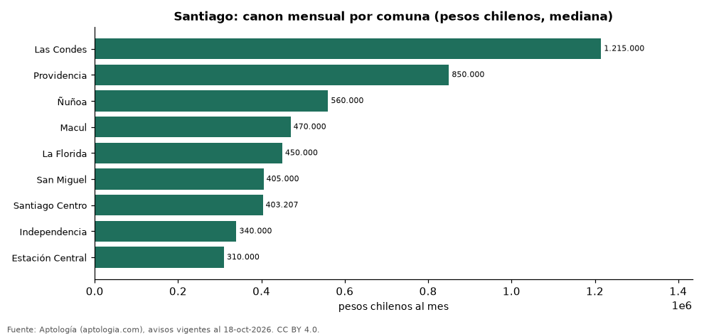

Precio de la vivienda por comuna en Santiago: arriendo en 9 comunas (octubre 2026)
Estudio con datos abiertos (CC BY 4.0). Versión original: https://github.com/elbroker/aptologia-datos/tree/main/estudios/precio-vivienda-santiago-de-chile-por-comuna-2026 · DOI: 10.5281/zenodo.23460809
Arrendar un apartamento en Santiago cuesta más en Las Condes, con un canon mediano de 1.215.000 pesos chilenos (USD 1.237) al mes, y menos en Estación Central, con 310.000 pesos chilenos (USD 316). La mediana de la ciudad es 450.000 pesos chilenos (USD 458) al mes; por metro cuadrado, el comuna más caro es Las Condes (16.333,3 pesos chilenos (USD 16,6) por m² al mes).
Resumen: analizamos 10.367 avisos de apartamentos en 9 comunas de Santiago con 30 avisos o más.
Actualizado: 18 de octubre de 2026 (datos del 18 de octubre de 2026) · Próxima actualización: mensual.

Resumen
| Indicador | Valor |
|---|---|
| Arriendo más alto | Las Condes: 1.215.000 pesos chilenos (USD 1.237) |
| Arriendo más bajo | Estación Central: 310.000 pesos chilenos (USD 316) |
| Santiago (mediana) | 450.000 pesos chilenos (USD 458) |
| Comunas | 9 |
Comunas de Santiago
| Comuna | Arriendo: pesos chilenos al mes | Avisos |
|---|---|---|
| Las Condes | 1.215.000 | 309 |
| Providencia | 850.000 | 356 |
| Ñuñoa | 560.000 | 520 |
| Macul | 470.000 | 314 |
| La Florida | 450.000 | 493 |
| San Miguel | 405.000 | 459 |
| Santiago Centro | 403.207 | 1.476 |
| Independencia | 340.000 | 344 |
| Estación Central | 310.000 | 381 |
Medianas de apartamentos; — indica menos de 30 avisos. El canon es el mensual sin gastos comunes, condominio ni administración.
Preguntas frecuentes
¿Cuál es el comuna más caro para arrendar en Santiago? Las Condes, con 1.215.000 pesos chilenos (USD 1.237) al mes en la mediana.
¿Dónde es más barato arrendar en Santiago? En Estación Central: 310.000 pesos chilenos (USD 316) al mes.
Metodología
- Fuente: exportes nocturnos de la base de datos de Aptología (aptologia.com) del 18 de octubre de 2026: avisos vigentes de vivienda en portales inmobiliarios de 13 países, recogidos por Aptología y vistos en línea entre el 11 y el 18 de octubre de 2026. Corte: 18 de octubre de 2026.
- Depuración: se eliminan duplicados exactos (misma ciudad, zona, tipo, precio, moneda, área, habitaciones y baños) y los precios fuera del percentil 1–99 de cada país, operación, moneda y tipo; el precio por m² usa solo avisos con área declarada entre 12 y 2.000 m² y también se recorta al P1–P99.
- Qué se mide: precios pedidos (publicados), no precios de cierre. En arriendo, el canon mensual sin administración, gastos comunes ni condominio.
- Muestra mínima: cada cifra publicada se apoya en al menos 30 avisos; las celdas con menos se omiten.
- Monedas: nunca se mezclan avisos de monedas distintas sin convertirlos. Conversión a dólares con la tasa de mercado de ExchangeRate-API (open.er-api.com, actualización del 18 Oct 2026): 1 USD = 3.182,80 COP, 1 USD = 18,47 M.N, 1 USD = 5,09 BRL, 1 USD = 3,44 PEN, 1 USD = 982,44 CLP, 1 USD = 1.514,57 ARS, 1 USD = 40,20 UYU, 1 USD = 5.705,37 PYG, 1 USD = 61,27 DOP, 1 USD = 0,89 EUR, 1 USD = 11,72 BOB; la UF chilena a 41.178,64 CLP (mindicador,cl. 18-oct-2026). Los avisos publicados en dólares se usan tal cual.
- Monedas: Arriendo en pesos chilenos; los avisos en otra moneda se excluyen.
- Limitaciones: la cobertura depende de los portales que recorre Aptología en cada país y es mayor en las ciudades grandes y en los segmentos medio-alto y alto; el área es la que declara el aviso, sin verificar; los nombres de zona vienen de los portales.
- Privacidad: solo se publican agregados; no se publica ningún dato personal, enlace a avisos ni nombre de anunciante.
- Datos abiertos: datos.csv, licencia CC BY 4.0.
Cómo citar
Pinzón Pineda, D. M. (2026). Precio de la vivienda por comuna en Santiago: arriendo en 9 comunas (octubre 2026). Aptología (aptologia.com). https://github.com/elbroker/aptologia-datos/tree/main/estudios/precio-vivienda-santiago-de-chile-por-comuna-2026. Datos: datos.csv, licencia CC BY 4.0.